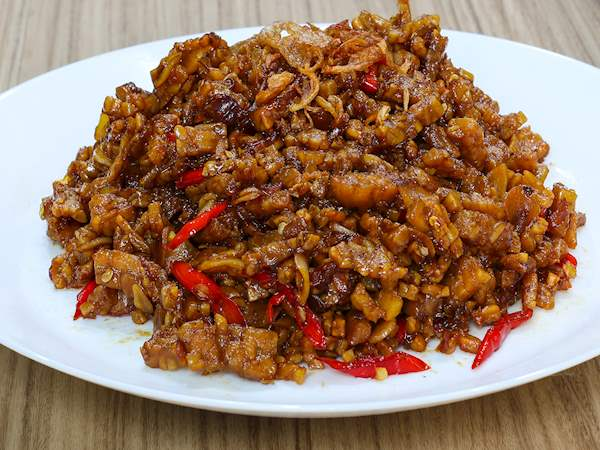

Tempe Orek

Description
Orek tempe adalah makanan tradisional yang mudah dibuat di rumah. Berasal dari tanah Jawa, ini adalah olahan tempe yang dipotong-potong kecil dan dimasak dengan gula serta kecap. Tak ayal, rasa manis mendominasi.
Bahan-Bahan
- 300g tempe
- 3 siung bawang putih
- 3 sdm kecap manis pedas
- 2 lembar daun salam
- 2 cm lengkuas
- 2 sdt penyedap rasa kaldu ayam
- ½ sdt gula pasir
- ½ sdt garam
- 200ml air
- 3 sdm minyak
Langkah Masak
- Patung dadu tempe 2cm, goreng hingga setengah matang
- iris halus bawang putih
- panaskan minyak, tumis bawang putih, lengkuas, dan daun salam hingga harum
- Masukkan tempe, kaldu ayam, kecap manis pedas, dan air. Aduk hingga rata
- masak hingga bumbu meresap dan air mengering
- angkat dan sajikan
Home